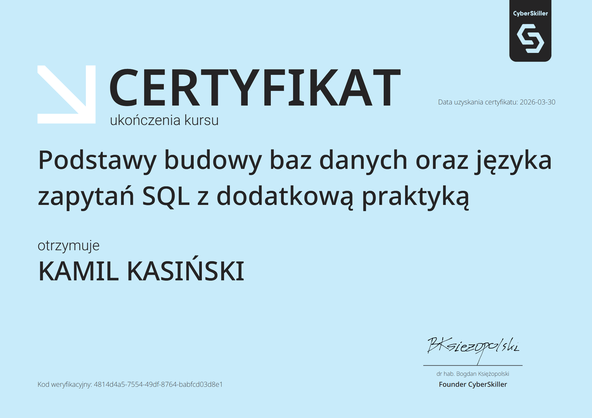
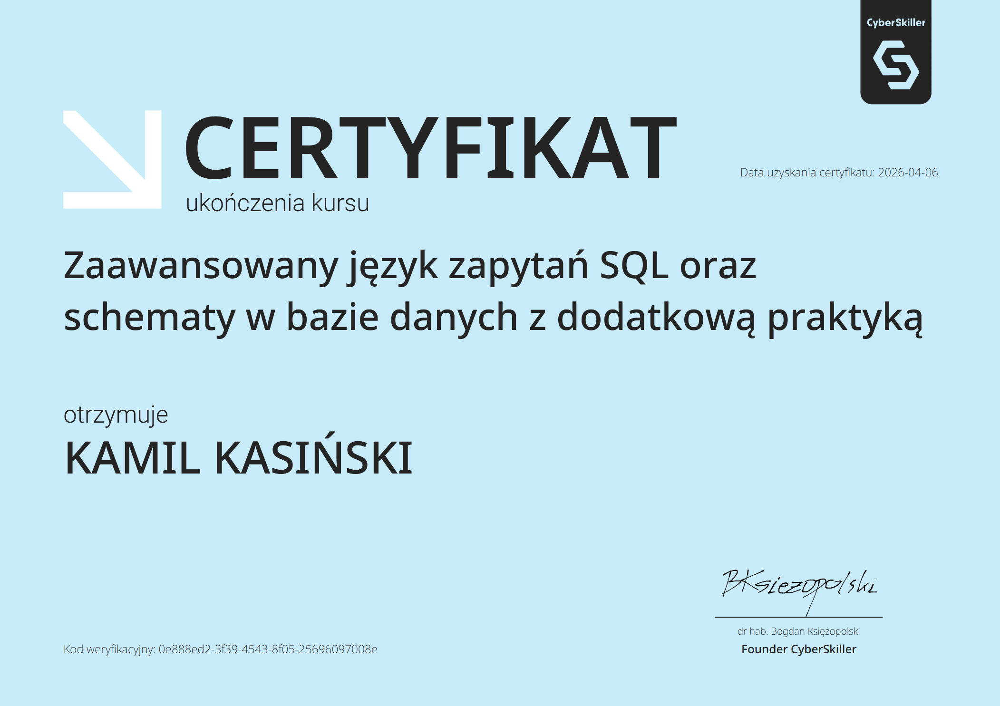
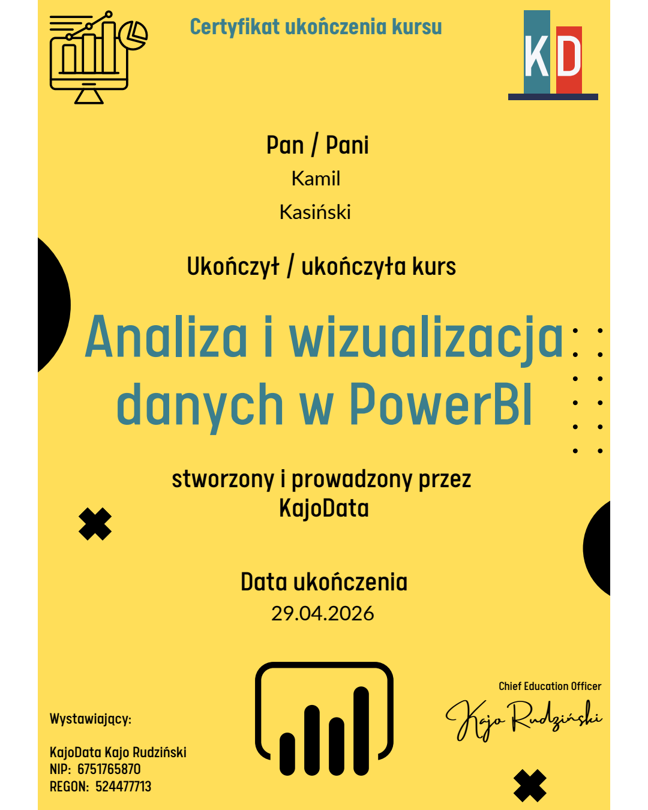
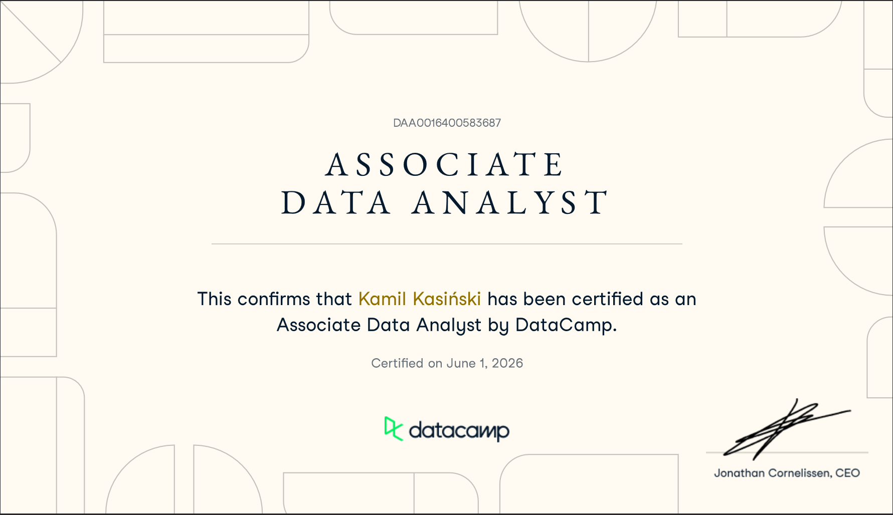
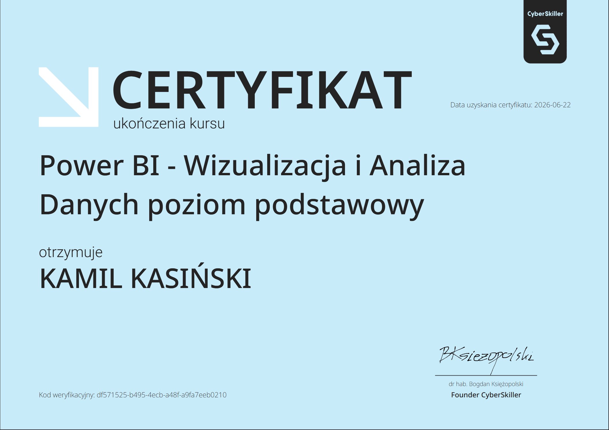

Google Data Analytics
Profesjonalny certyfikat Google potwierdzający kompetencje w przygotowaniu, przetwarzaniu i analizie danych na poziomie zawodowym...
Nieustannie podnoszę swoje kompetencje, aby dostarczać analizy najwyższej jakości.
Profesjonalny certyfikat Google potwierdzający kompetencje w przygotowaniu, przetwarzaniu i analizie danych na poziomie zawodowym...


Na kurs Analiza danych w Microsoft Excel składała się nauka formuł, tabele przestawne, podstawy przygotowania, czyszczenia i analizy danych...

Zaawansowany kurs analizy danych w MySQL i PostgreSQL. Obejmuje implementację logiki biznesowej (CASE WHEN), optymalizację zapytań poprzez CTE (WITH) oraz zaawansowaną analitykę z wykorzystaniem funkcji okna (Window Functions).

Kompleksowy kurs z zakresu zaawansowanej analizy danych w środowiskach MySQL oraz PostgreSQL...

Kompleksowe szkolenie z zakresu automatyzacji procesów ETL w środowisku Excel i Power BI...


Kompleksowe szkolenie z zakresu analityki danych, automatyzacji procesów raportowych oraz wdrażania rozwiązań klasy Enterprise w środowisku Microsoft Power Platform.



Ukończenie modułu Business Intelligence z wykorzystaniem narzędzia Power BI, potwierdzające biegłość w projektowaniu modeli danych, transformacji zbiorów oraz budowie profesjonalnych raportów analitycznych.